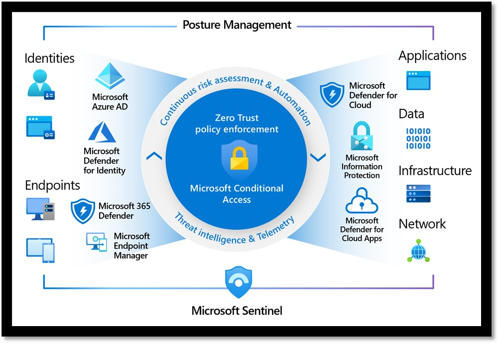

I am a passionate Security Analyst with practical experience in Security Operations Center (SOC), Microsoft Sentinel, Microsoft Defender XDR, Microsoft Azure, Microsoft Entra ID, Microsoft Intune, Vulnerability Management, Threat Hunting, Incident Response, and Cloud Security
Currently, I work as a Security Analyst at dSilo, where I monitor enterprise environments, investigate security incidents, perform vulnerability assessments, manage security patches, strengthen Azure cloud security, and support compliance with NIST SP 800-53 and SOC 2 security frameworks..
Previously, I worked as a Cyber Security Analyst Intern at SynthoQuest Private Limited, where I performed web application security testing, vulnerability assessments, penetration testing, and network security analysis using tools such as Microsoft Sentinel, Microsoft Defender, Nessus, Qualys, Burp Suite, Wireshark, Nmap, SQLMap, Metasploit, and Accunetix.
I enjoy solving complex security challenges, improving organizational security posture, automating security processes, and continuously learning emerging cybersecurity technologies.
My core cybersecurity expertise
Monitor, investigate, and respond to security incidents using Microsoft Sentinel, Microsoft Defender XDR, and enterprise security tools.
Detect suspicious activities, investigate security events, and proactively identify emerging cyber threats across enterprise environments.
Secure Microsoft Azure environments using Microsoft Entra ID, Intune, Microsoft Defender, and Azure security best practices.
Identify, prioritize, and remediate vulnerabilities across Windows, Linux, and cloud infrastructure using industry-standard security tools.
My mission is to safeguard enterprise systems by implementing proactive security monitoring, threat detection, vulnerability management, and secure cloud infrastructure. I strive to strengthen organizational cybersecurity through continuous learning, innovation, and industry best practices.
My vision is to become an expert Cybersecurity Professional specializing in Security Operations Center (SOC), Cloud Security, Threat Hunting, Digital Forensics, and Incident Response while helping organizations defend against modern cyber threats.
I currently work as a Security Analyst at dSilo, where I monitor enterprise environments using Microsoft Sentinel and Microsoft Defender XDR. My responsibilities include vulnerability management, security patching, Azure administration, Microsoft Entra ID, Microsoft Intune, incident response, security investigations, and compliance activities aligned with NIST SP 800-53 and SOC 2.
Contact Me
The professional qualities that define my approach to cybersecurity
Strong ability to analyze security events, investigate incidents, and identify potential threats through structured problem-solving.
Experienced in responding to security incidents, investigating alerts, and supporting remediation to minimize business risk.
Passionate about learning new cybersecurity technologies, certifications, and security best practices to stay ahead of evolving cyber threats.
Work effectively with security, cloud, and IT teams to improve security posture and support enterprise security initiatives.
Articulating ideas clearly and professionally to clients, team members, and stakeholders to ensure project alignment.
I am passionate about protecting enterprise environments through proactive security monitoring, threat detection, vulnerability management, and cloud security. My goal is to help organizations build resilient, secure, and trusted digital infrastructures.
Security Analyst
My professional roadmap in cybersecurity
Strengthen my expertise in Security Operations Center (SOC), incident response, threat hunting, and security monitoring while contributing to enterprise security operations.
Advance my career as a Cloud Security and Cybersecurity Professional by mastering Microsoft Azure Security, Microsoft Sentinel, Microsoft Defender XDR, and earning advanced industry certifications while helping organizations build resilient security infrastructures.
My academic journey and professional growth in cybersecurity
Oxford I.I.I school
Grade: 7.8/10
Built a strong academic foundation with an interest in mathematics, science, and computer technology.
Narayana Junior College
Grade: 7.0/10
Studied Mathematics, Physics, and Chemistry, building strong analytical foundations.
Specialization in Cybersecurity
chalapathi institute of technology
Grade: 7.28/10
Studied networking, operating systems, cryptography, ethical hacking, cloud security, vulnerability assessment, penetration testing, and secure software development.
March 2025 - August 2025
SynthoQuest Private Limited
Performed vulnerability assessments, penetration testing, web application security testing, network security analysis, and worked with tools such as Nessus, Qualys, Burp Suite, Wireshark, Nmap, SQLMap, and Metasploit.
dSilo
Responsible for Security Operations Center (SOC) monitoring, Microsoft Sentinel, Microsoft Defender XDR, Azure Security, Microsoft Entra ID, Microsoft Intune, vulnerability management, patch management, incident response, security investigations, and compliance aligned with NIST SP 800-53 and SOC 2.
Technical expertise and security tools I work with